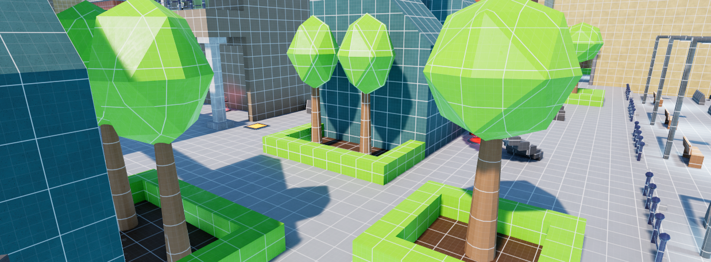
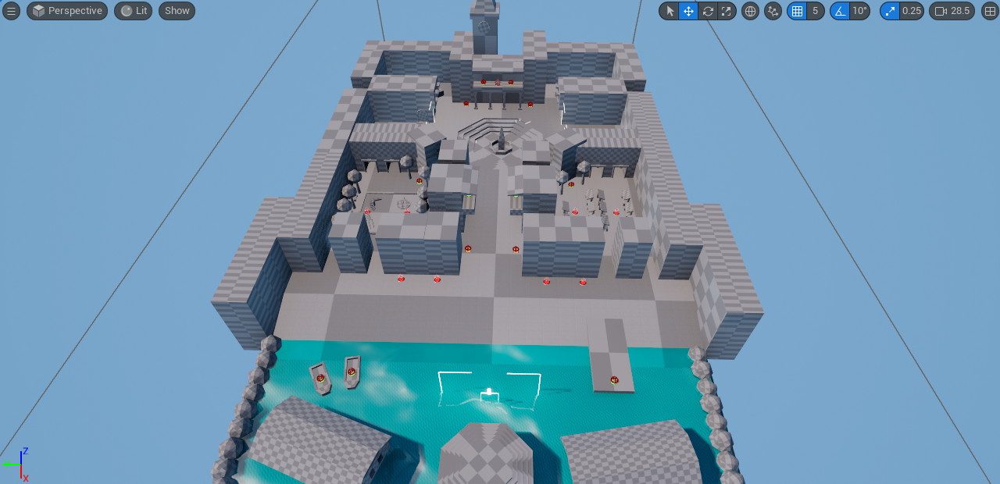
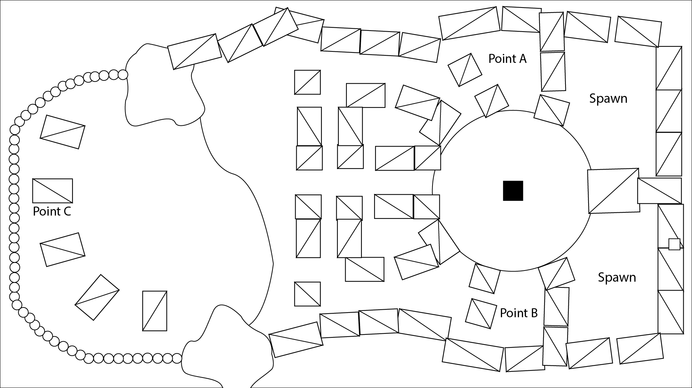

Narrative level design / environment storytelling
Between Two Crowns
A vertical, story-led exploration experience shaped around a fragile political divide, where each path reveals a different side of the same world. The brief was to blend environmental storytelling with clear traversal and a memorable sense of place.
Overview
The level is designed as a journey between two kingdoms that never quite agree on the same truth. The experience is curated around pacing, discovery, and emotional tension rather than pure spectacle.
“The most important thing was making each location feel like it belonged to a living society, even when the player only sees it for a moment.”
Cinematic Video
Real-time cinematic render of the finished prop.
Systems & structure
The project uses a simple but flexible rhythm: open exploration, a short encounter, then a calm reveal. That keeps the experience readable while still leaving room for mood and worldbuilding.
How the level moves
- Players are introduced to the setting through a quiet, guided approach.
- Each new space adds a piece of story through architecture and visual detail.
- Sections are paced to alternate between tension, discovery, and relief.
- Environmental landmarks create clear direction without feeling overly scripted.
Visual language
- Deep contrasts and warm highlights help frame key moments.
- Materials and colour work together to support the mood of each region.
- Large silhouettes keep the composition readable from a distance.
- Textural variation helps the world feel lived-in rather than generic.
Gallery
These frames show the same world from different emotional angles: calm, threatening, and intimate.



.png)
Next steps
This page is intentionally easy to update. Swap out the text, replace the images, and keep the same structure for future case studies.
Get in touch
Interested in collaborating on a similar project? I’m always happy to talk through level design, storytelling, and environment art.
- Email: zakdgbrown@gmail.com
- Portfolio: View more work